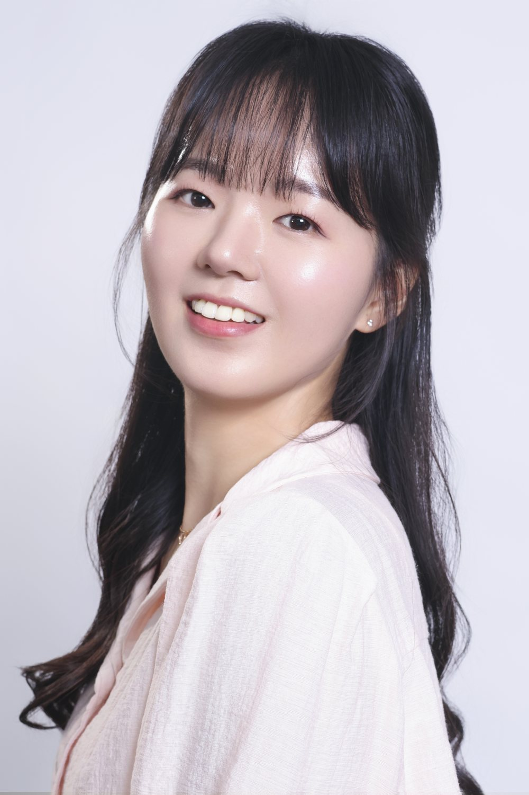

치열하게 생각하고,
스마트하게 접근해
최적의 시나리오를 찾습니다.

소개
LG전자 HS사업본부 AI가전기획팀에서 UX 기반 기획을 맡고 있는 이수빈입니다.
사용자가 고민하고 판단하는 순간을 리서치로 찾아내고, AI가 언제 제안하고 언제 기다릴지를 설계합니다. 한국·일본·북미 사용자 조사에서 출발해 서비스 구조, 인터랙션, GUI까지 하나의 흐름으로 연결하는 일을 좋아합니다.
현재
선임 · UX 기반 기획자 LG전자 HS사업본부 AI가전기획팀
주요 성과
- CES 2025 전시AI Refrigerator: Food Intelligence
- 본부 Creative Award 수상AI Refrigerator: Food Intelligence
- 북미 사용자 검증 리드AI Oven: Sous Chef Agent · Prototype UT n=20
역량
- AI Agent UX개입 타이밍, 통제권, 신뢰 설계
- User ResearchFGD · 가정 방문 심층 인터뷰 · 프로토타입 UT
- Service Strategy서비스 구조화 · 가치 순환 모델 · 로드맵
- Interaction & GUILCD UI · Voice·Touch 멀티모달